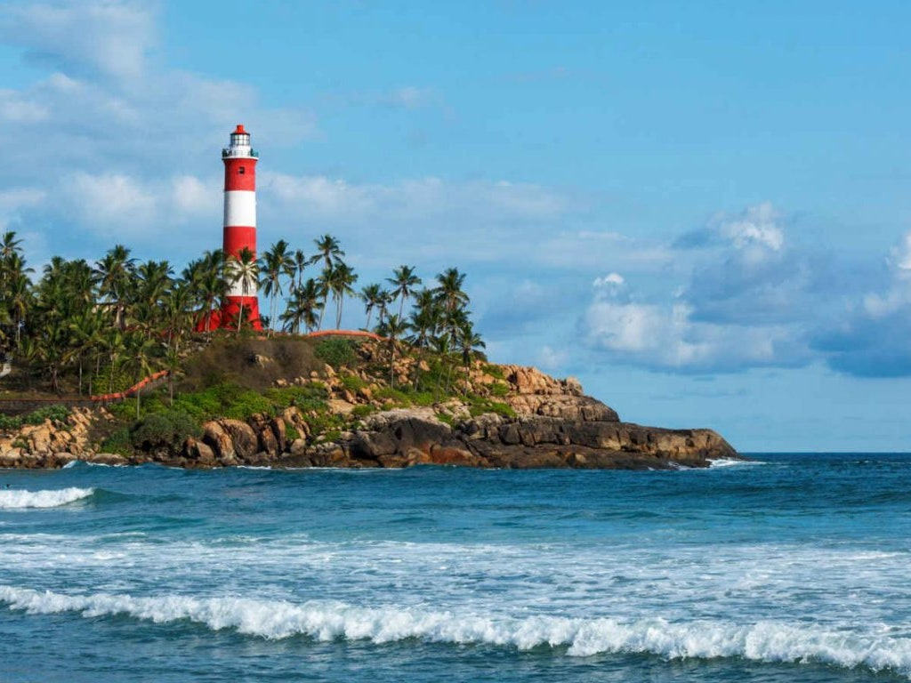
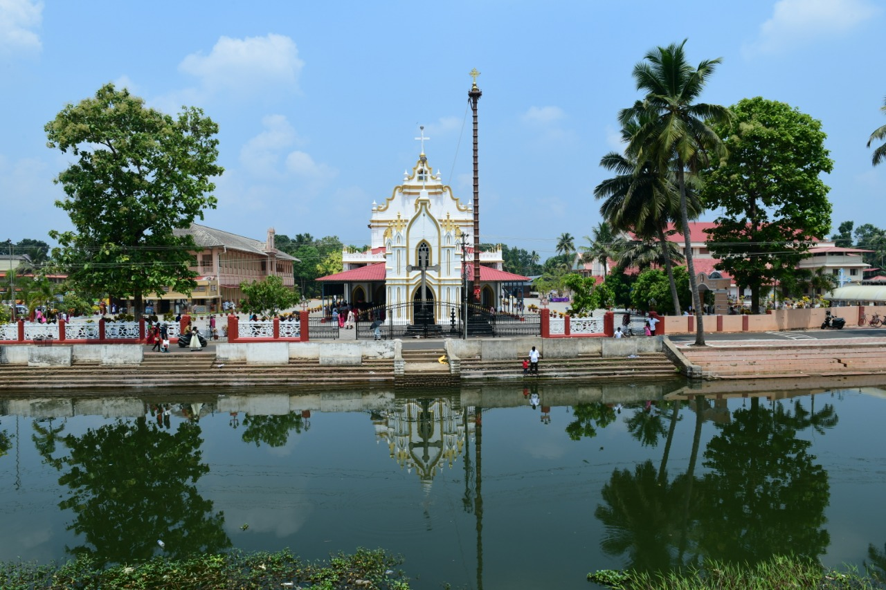

Venice of the East
Alappuzha (or Alleppey) is a city on the Laccadive Sea in the southern Indian state of Kerala. It's best known for houseboat cruises along the rustic Kerala backwaters, a network of tranquil canals and lagoons. Alappuzha Beach is the site of the 19th-century Alappuzha Lighthouse. The city's Mullakkal Temple features a traditional design. Punnamada Lake's snake boat races are a well-known annual event.
Top Destinations

Kuttanad Backwaters
One of the best places to visit in Alleppey is Kuttanad Backwaters. This isn’t a place, it’s a phenomenon. It is a spectacular lagoon, surrounded by the beauty of lakes, rivers, canals, misty mountains and ethereal landscapes.

St. Mary's Forane Church
This beautiful church traces its existence back to 835 AD and is known for its events, Friday Liturgy and educational institutions. Currently, the church is a world-renowned center of pilgrimage, where one can know more about the culture and lifestyle of the Christians.

Krishnapuram Palace
It is one of the most popular museums in Alleppey. Built-in the 18th century by the king of Travancore, Anizham Thirunal Marthanda Varma, Krishnapuram Palace is quite popular for its vintage architecture and artistic murals.

Alleppey Lighthouse
Glistening sands, crystal clear water, beautiful waves, enchanting sunrise, and sunset is what makes the Alappuzha or the Alleppey beach one of the best places to visit in Alleppey. This stunningly beautiful beach is known for its vast, endless stretches, thereby proving as a getaway for couples as well as families.
Alleppey Beach
Our Lady of Dolours Basilica alias Puthanpally is a minor basilica of the Syro-Malabar Catholic Church in Thrissur City in the Indian state of Kerala. The third tallest church in Asia, it is famous for its Gothic style architecture.

St. Andrew's Basilica Arthunkal
The largest shrine of St. Sebastian in the whole world, this church is one of the most popular Alleppey tourist places. The prestigious church was established in the 16th century and rebuilt in 1584, under Father Jacomo Fenicio, who was known to heal people with his touch.
Karumadi
A village situated just a few kilometers from Alappuzha or Alleppey, Karumady or Karumadi is one of the amazing Alappuzha tourist places that explorers would love. The place plays a pivotal role in the history and development of Buddhism as a religion and is perhaps best known for the black granite statue of Sri Buddha.

Marari Beach
If you want to unwind completely, then the Marari Beach is a must-visit destination for you. The sleepy little village located close to Marari Beach is what makes this beach distinct and attractive, inviting people from all over the world to learn and understand the culture of the Indian state of Kerala.

Edathua Church
This famous church is known for celebrating huge feasts during the month of May. The church is also popular for its Christian and non-Christian pilgrims. The Vicar of this Palli was Father Thoman Olakkapady. Currently, the church is located close to the Mahatma Gandhi University’s St. Aloysius College which is built and managed by the church.
Pandavan Rock
Pandavan Rock is an amalgamation of breathtaking caves and glorious rock carvings. The natural beauty surrounding this site is bliss. It is said that the Pandavas stayed inside the cave during Mahabharata.